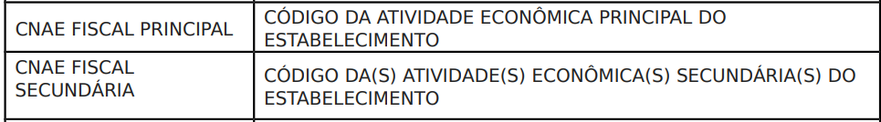

Sobre CNPJ

O que é?
De acordo com a Receita Federal, o CNPJ é "um banco de dados administrado pela RFB, que armazena informações cadastrais das Pessoas Jurídicas e outras entidades, sendo de interesse das administrações tributárias da União, dos Estados, do Distrito Federal e dos Municípios". Isso significa que qualquer empreendedor ou empresário que deseje atuar legalmente no mercado brasileiro, oferecendo produtos ou serviços e emitindo notas fiscais, precisa registrar sua empresa e obter um CNPJ.
O número do CNPJ é composto por 14 dígitos formatados da seguinte maneira: AA.AAA.AAA/BBBB-CC. Os oito primeiros dígitos (representados pelas letras 'A') formam a base ou raiz do CNPJ, identificando a empresa em si. Os próximos quatro dígitos (representados pelas letras 'B') distinguem se a unidade é a matriz ou uma filial da empresa. Os dois últimos dígitos (representados pelas letras 'C') atuam como dígitos verificadores, garantindo a autenticidade do número.
Resumo
- Fonte de dados: Receita Federal Brasileira;
- Método de coleta do RFB: Toda empresa que busca estar legalizada no país tem a obrigatoriedade de se cadastrar junto à RFB;
- Método de coleta: Dados disponibilizados pela Receita Federal Brasileira;
- Tratamento de dados: Pedro Almeida
- Periodicidade: Os dados são atualizados mensalmente;
- Abrangência: Nacional (Brasil), portanto, as análises podem ser feitas em granularidade de municipio.
- Técnica de Investigação: Censitária;
Curiosidade: o que é MEI?
Emissão do CNPJ
 Sindicatos;
Sindicatos;
Condomínios;
Associações;
ONGs (Organizações não governamentais);
Igrejas;
Partidos políticos;
Empresas e orgãos públicos;
Autônomos.
Número de inscrição;
Nome empresarial;
Composição societária;
Endereço;
Data de abertura;
Natureza jurídica;
Atividade econômica;
Se existente, atividade econômica secundária;
Situação cadastral;
Código e descrição do estatuto jurídico;
Outros.
Porte
Ao se falar de porte de uma empresa, não estamos tratando somente do capital financeiro que a pessoa jurídica possui, mas também do espaço físico ou número de funcionários. Atualmente existem cinco categorias de portes de empresa, são elas:
- Microempreendedor Individual (MEI);
- Microempresa (ME);
- Empresa de Pequeno Porte (EPP);
- Empresa de Médio Porte;
- Grande Empresa.
O Microempreendedor Individual é um porte de empresa para abarcar atividades com faturamento até R$81 mil por ano – é também o menor tipo de empresa disponível no Brasil. Só é permitido contratar apenas um colaborador e pagando, no máximo, o teto da categoria, neste modelo.
O porte de Microempresa, por classificação de faturamento conforme o Estatuto Nacional da Microempresa e da Empresa de Pequeno Porte, Lei Complementar 123, de 2006, permite atingir até R$360 mil por ano. Uma microempresa pode ter até 20 funcionários.
Pela mesma classificação do Estatuto, uma Empresa de Pequeno Porte pode faturar até R$4,8 milhões por ano. Este formato pode ter até 100 funcionários.
Esse tipo de classificação pode oscilar de uma área para outra, mas geralmente o faturamento está em torno de R$ 4,8 milhões e menor ou igual a R$ 300 milhões. Na indústria, o número de funcionários para ser categorizado como médio porte é de 100 a 499 empregados. Já ná área de comércio e serviços, é em torno de 50 a 99 empregados.
Por fim, uma empresa é categorizada como grande porte quando seu faturamento atinge valores superiores a R$ 300 milhões. E o número de empregados geralmente é superior a 500 funcionários na indústria, já em comércio e serviços é superior a 100 empregados.
Classificação Nacional de Atividades Econômicas - CNAE
Trata-se de uma informação cadastral obrigatória a todos os engajados na produção de bens e serviços, podendo compreender estabelecimentos de empresas privadas ou públicas, estabelecimentos agrícolas, organismos públicos e privados, instituições sem fins lucrativos e agentes autônomos (pessoa física).
CNAE na base do CNPJ
Na base do CNPJ, o CNAE permite o acesso a, ou a comparação das empresas de ramos de atividade específicos, havendo a possibilidade de analisar o ramo de atividade principal e também os secundários.

Categorias do CNAE:
Situação Cadastral de um CNPJ
Identifica aquelas entidades ou estabelecimentos que estão regulares e em funcionamento (ou também quando não se enquadram em nenhuma das quatro opções seguintes).
Identifica organizações que estão inadimplentes em suas responsabilidades fiscais ou legais por dois exercícios.
a) solicitar baixa de inscrição, estando esta solicitação em análise ou tendo sido indeferida;
b) estiver em processo de declaração de inaptidão por irregularidades fiscais ou legais;
c) interromper temporariamente suas atividades, mediante solicitação;
d) apresentar indício de atitude fraudulenta de sócio ou titular.
Identifica quando a Pessoa Jurídica realiza pedido de baixa, sendo deferido.
a) Quando é atribuído mais de um número de inscrição para o mesmo estabelecimento;
b) Se constatado vício em alguma ação praticada com aquele CNPJ;
c) Se for constatado ato de inscrição relativo à entidade que não atenda aos requisitos de inscrição no CNPJ.
Motivo de Situação Cadastral
Motivo de Situação Cadastral
| Código | Motivo de Situação Cadastral |
|---|---|
| 1 | Extinção por Encerramento, Liquidação Voluntária |
| 2 | Incorporação |
| 3 | Fusão |
| 4 | Cisão Total |
| 5 | Encerramento da Falência |
| 6 | Encerramento da Liquidação |
| 7 | Elevação a Matriz |
| 8 | Transpasse |
| 9 | Não Início de Atividade |
| 10 | Extinção pelo Encerramento da Liquidação Judicial |
| 11 | Anulação por Multiplicidade |
| 12 | Anulação Online de Ofício |
| 13 | Omissão Contumaz |
| 14 | Omissão Não Localizada |
| 15 | Inexistente de Fato |
| 16 | Anulação por Vícios |
| 17 | Baixa Iniciada e Ainda Não Deferida |
| 18 | Interrupção Temporária das Atividades |
| 19 | Omisso De DIRPJ até 5 Exercícios |
| 20 | Em Condição de Inaptidão |
| 21 | Pedido de Baixa Indeferida |
| 22 | Restabelecimento com Certidão Positiva com Efeito de Negativa |
| 23 | Com Pendência Fiscal |
| 24 | Por Emissão de Certidão Negativa |
| 25 | Certidão Positiva Com Efeito de Negativa |
| 26 | Irregularidade de Pagamento |
| 27 | Irregularidade de Recolhimento e Exigibilidade Suspensa |
| 28 | Transferência Filial Condição Matriz |
| 29 | Aguardando Conferência de DIRPJ/DIPJ |
| 30 | ANR - Aguardando Conferência De DIRPJ/DIPJ |
| 31 | Extinção da Filial |
| 32 | Inexistente de Fato ADE/Cosar |
| 33 | Transferência do Órgão Local a Condição de Filial do Órgão Regional |
| 34 | Anulação de Inscrição Indevida |
| 35 | Empresa Estrangeira Aguardando Documentação |
| 36 | Prática Irregular de Operação de Comércio Exterior |
| 37 | Baixa de Produtor Rural |
| 38 | Baixa Deferida pela RFB Aguardando Análise do Convenente |
| 39 | Baixa Deferida pela RFB e Indeferida Pelo Convenente |
| 40 | Baixa Indeferida pela RFB e Aguardando Análise do Convenente |
| 41 | Baixa Indeferida pela RFB e Deferida Pelo Convenente |
| 42 | Baixa Indeferida pela RFB e Sefin |
| 43 | Baixa Deferida pela RFB |
| 44 | Baixa Deferida pela RFB e Sefaz |
| 45 | Baixa Deferida pela RFB |
| 46 | Baixa Deferida pela RFB e Sefaz e Indeferida pela Sefin |
| 47 | Baixa Deferida pela RFB e Sefin e Indeferida pela Sefaz |
| 48 | Baixa Indeferida pela RFB |
| 49 | Baixa Indeferida pela RFB |
| 50 | Baixa Indeferida pela RFB |
| 51 | Baixa Indeferida pela RFB e Sefaz |
| 52 | Baixa Indeferida pela RFB |
| 53 | Baixa Indeferida pela RFB e Sefaz e Deferida pela Sefin |
| 54 | Baixa - Tratamento Diferenciado Dado às ME e EPP (Lei Complementar Número 123/2006) |
| 55 | Deferido Pelo Convenente |
| 56 | Artigo 30 |
| 57 | Indício Interposição Fraudulenta |
| 58 | Falta de Pluralidade de Sócios |
| 59 | Omissão de Declarações |
| 60 | Localização Desconhecida |
| 61 | Inaptidão |
| 62 | Registro Cancelado |
| 63 | Anulação por Não Confirmado Ato de Registro do MEI na Junta Comercial |
| 64 | Inaptidão (Lei 11.941/2009 Art.54) |
| 65 | Determinação Judicial |
| 66 | Omissão Contumaz |
| 67 | Inconsistência Cadastral |
| 68 | Baixa Registrada na Junta |
O que é possível saber com a base CNPJ?
Quais as informações são e não possíveis saber com a base CNPJ?
É possível saber
Localização
- Rua/Avenida;
- Bairro;
- Número do imóvel;
- Cidade;
- Estado;
- País;
- CEP;
- Latitude e Longitude
Contato
- E-mail;
- Telefone;
Sócio
- Nome;
- CPF;
- Data de Entrada na Sociedade;
- Faixa etária.
- Sexo
MEI
- Nome;
- CPF_CRIPTOGRAFADO;
- Sexo
Empresa
- Nome da Empresa;
- Se é matriz ou filial;
- Situação Cadastral;
- Atividade econômica;
- Capital Social;
- Porte;
- Data de Abertura;
- Data de Cadastro;
- Setor de Atuação.
Potencialidades e Limitações
Potencialidades
- Os dados disponibilizados são referentes à totalidade dos CNPJs cadastrados no território brasileiro;
- Enriquecimento ou validação de dados;
- Principais dimensões analíticas: Data de Registro, Informações de sócios (data de entrada, CPF, nome,...), capital social, localização, nome fantasia, situação do CNPJ, natureza juridica;
- Identificar sócios e empresas;
Limitações
 Não possui dimensões relacionadas a faturamento, número de funcionários, faixa salarial;
Não possui dimensões relacionadas a faturamento, número de funcionários, faixa salarial;